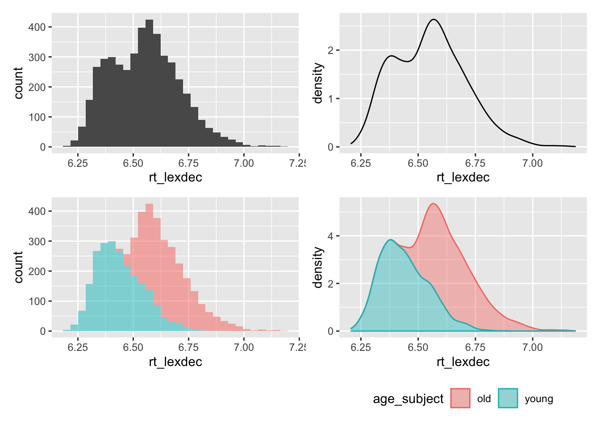

# suppress scientific notation
options(scipen=999)5 Categorical predictors
Regression for Linguists
Learning Objectives
Today we will learn…
- about cateogorical predictors
- how to interpret different contrast coding
Set-up environment
We’ll also need to load in our required packages.
# load libraries
pacman::p_load(
tidyverse,
here,
broom,
lme4,
janitor,
languageR)Load data
Let’s continue working with the english dataset from the languageR package. Let’s just call it df_freq_eng.
df_freq_eng <-
as.data.frame(english) |>
dplyr::select(RTlexdec, RTnaming, Word, LengthInLetters, AgeSubject, WrittenFrequency) |>
rename(rt_lexdec = RTlexdec,
rt_naming = RTnaming,
freq_written = WrittenFrequency) |>
clean_names() |>
# standardize continuous predictors
mutate(
freq_z = scale(freq_written),
length_z = scale(length_in_letters)
) |>
relocate(word) |>
arrange(word)In your exploratory data analysis, you might’ve noticed a bimodal distribution.

This looks like a bimodal distribution, i.e., there are two modes (most frequent value, i.e., peak in a histogram). What might be driving this? We know that there were two subject groups: old and young. How does the distribution of these two groups look?
Running our model of the log reaction times as predicted by frequency and length, we see:
fit_freq_length <-
lm(rt_lexdec ~ freq_z*length_z,
data = df_freq_eng)glance(fit_freq_length)$r.squared[1] 0.1896649glance(fit_freq_length)$adj.r.squared[1] 0.1891323Seems like we don’t have any overfitting in our model (\(R^2\) and adjusted \(R^2\) are comparable). Let’s look at our coeffiecients.
tidy(fit_freq_length) |> select(term, estimate)# A tibble: 4 × 2
term estimate
<chr> <dbl>
1 (Intercept) 6.55
2 freq_z -0.0682
3 length_z 0.00328
4 freq_z:length_z -0.00196There is a negative slope for frequency, indicating shorter reaction times for words with higher frequency (when holding length constant). There is a positive slope for length, indicating longer reaction times for longer words (holding frequency constant). There is also a negative interaction estimate, indicating that when both length and frequency increase, reaction times decrease. This seems similar to the dataset we explored in the previous sections. But, this bimodal distribution is suggesting we should include age group as a predictor, since the two groups seem to pattern differently in their reading times. Could it be that the effect of frequency and length also differ as a function of age group?
5.1 Categorical predictors
In linguistic research we often want to compare the effect of groups or categories, such as native or non-native speakers, or grammatical or ungrammatical stimuli. We might expect longer reading times for non-native (compared to native) speakers of a language, or for ungrammatical (versus grammatical) sentences. With our current dataset, we’d predict longer reading times for older participants than younger participants (although we should hypothesise before collecting and visualising our data!). How might these age effects interact with effects of word frequency and length?
5.1.1 Including a categorical predictor
What would happen if we just include age_subject in our model?
fit_age <-
lm(rt_lexdec ~ freq_z*length_z + age_subject,
data = df_freq_eng)First, we see that adding age to our model results in a large increase in variance explained, and that the \(R^2\) and adjusted \(R^2\) values are comparable. In addition, the VIF values for all coefficients are near 1. This indicates that our predictors all contribute to the variance explained by the model and are not correlated.
glance(fit_age)$r.squared[1] 0.6888949glance(fit_age)$adj.r.squared[1] 0.6886222car::vif(fit_age) freq_z length_z age_subject freq_z:length_z
1.012553 1.004461 1.000000 1.008108 Now that we see that our model is not overfit and that our predictors are not correlatd, let’s take a look at our model estimates.
tidy(fit_age) |> select(term,estimate)# A tibble: 5 × 2
term estimate
<chr> <dbl>
1 (Intercept) 6.66
2 freq_z -0.0682
3 length_z 0.00328
4 age_subjectyoung -0.222
5 freq_z:length_z -0.00196In addition to the effects we observed in our earlier model, we see that there is a negative slope for age_subjectyoung, indicating that reaction times decrease when…what? How do we interpret a slope for a categorical variable? Regression works with numerical values, so how does a categorical variable get fit to a line? If we feed a categorical variable into the lm() function, the factor levels (i.e., the categories in a categorical variable) are given numerical values. We need to know what these values are in order to know how to interpret our model estimates. We call these numerical values mapped onto factor levels contrast coding, and we can check the contrasts of a given factor using the function contrasts().
contrasts(df_freq_eng$age_subject) young
old 0
young 1We see that old was coded at \(0\) and young as \(1\). This means that our slope for age_subjectyoung represents the change in reaction times when we move from old to young, which corresponds to a 1-unit change in our predictor (because the difference between 0 and 1 is 1). This is called treatment coding, or dummy coding, where one factor level is coded as 0 and the other as 1. Let’s remove the continuous variable for now and focus on age_subject. Let’s also look at raw reaction times, to more easily interpret the results.
fit_age <-
lm(exp(rt_lexdec) ~ age_subject,
data = df_freq_eng)glance(fit_age)$r.squared[1] 0.4682224Our \(R^2\) value is lower than when we included frequency and length, but higher still than our model with frequeny and length but no age.
tidy(fit_age) |> select(term, estimate)# A tibble: 2 × 2
term estimate
<chr> <dbl>
1 (Intercept) 787.
2 age_subjectyoung -157.We see that there is an estimated decrease in reaction times of 157ms for the young group compared to the old group. But what does the intercept represent here? Let’s look at our data again.
df_freq_eng |>
select(rt_lexdec, age_subject) |>
mutate(rt_lexdec = exp(rt_lexdec)) |>
summary() rt_lexdec age_subject
Min. : 495.4 old :2284
1st Qu.: 617.4 young:2284
Median : 699.6
Mean : 708.1
3rd Qu.: 775.3
Max. :1323.2 And how does rt_lexdec differ between the groups?
df_freq_eng |>
select(rt_lexdec, age_subject) |>
mutate(rt_lexdec = exp(rt_lexdec)) |>
summarise(mean = mean(rt_lexdec),
min = min(rt_lexdec),
max = max(rt_lexdec),
.by = "age_subject"
) age_subject mean min max
1 young 629.5473 495.38 971.8
2 old 786.7200 603.77 1323.2We see here that the intercept for our model actually corresponds to the mean reaction time for the old group. Why is this? Recall that the intercept corresponds to the \(y\) value (reaction time) when \(x\) is \(0\). In treatment/dummy coding, one factor level is coded as \(0\). In our case this was old, and so the intercept corresponds to the mean reaction time for participants in the old group. How does R choose which variable to code as \(0\)? It simply takes the first level name alphabetically: old comes before young, so old was automatically taken as the ‘baseline’ to which young was compared.
And if we were to add the slope to the intercept, we would get the mean for the \(young\) group. Why is this?
coef(fit_age)['(Intercept)'] + coef(fit_age)['age_subjectyoung'](Intercept)
629.5473 Why are the means for the two groups used? The mean is the value closest to all values in a univariate dataset, and regression aims to inimise residuals (recall the line of best fit). So, a line is fit between the means of these two factor levels to achieve minimal residuals. This actually is the same thing as a t-test:
t.test(exp(rt_lexdec) ~ age_subject, data = df_freq_eng)
Welch Two Sample t-test
data: exp(rt_lexdec) by age_subject
t = 63.406, df = 4144.6, p-value < 0.00000000000000022
alternative hypothesis: true difference in means between group old and group young is not equal to 0
95 percent confidence interval:
152.3128 162.0325
sample estimates:
mean in group old mean in group young
786.7200 629.5473 If we compare this to our model, we see that the t- and p-values are identical (more on these later).
tidy(fit_age)# A tibble: 2 × 5
term estimate std.error statistic p.value
<chr> <dbl> <dbl> <dbl> <dbl>
1 (Intercept) 787. 1.75 449. 0
2 age_subjectyoung -157. 2.48 -63.4 0fig_nocontrasts <-
df_freq_eng |>
ggplot() +
aes(x = age_subject, y = exp(rt_lexdec)) +
labs(title = "No contrasts") +
# geom_vline(xintercept = 0, linetype="dashed", size = .5) +
geom_point(position = position_dodge(.6)) +
geom_smooth(method = 'lm', aes(group=1)) + theme_minimal() +
theme_bw()
fig_treatment <-
df_freq_eng |>
mutate(age_subject = if_else(age_subject=="young",1,0)) |>
ggplot() +
aes(x = age_subject, y = exp(rt_lexdec)) +
labs(title = "Treatment contrasts") +
geom_vline(xintercept = 0, linetype="dashed", size = .5) +
geom_point(position = position_dodge(.6)) +
geom_smooth(method = 'lm', aes(group=1)) + theme_minimal() +
theme_bw()
fig_nocontrasts + fig_treatment5.2 Sum contrasts
Treatment/dummy coding is the default contrast coding scheme. Sum coding is another frequently used coding scheme, which is essentially centring categorical variables. Just as with continuous variables, the motivation for sum contrast coding mainly lies in the interpretation of interaction effects. How can we tell R we want to use sum contrast coding, and not dummy coding? There are different ways to do this:
# first, make sure your variable is a factor
df_freq_eng$age_subject <- as.factor(df_freq_eng$age_subject)
# check
class(df_freq_eng$age_subject)[1] "factor"# next, you could use the contr.sum() function
contrasts(df_freq_eng$age_subject) <- contr.sum(2) # where 2 means we have 2 levels
contrasts(df_freq_eng$age_subject) [,1]
old 1
young -1Here we see that old is coded as \(-1\) and young as \(+1\). I prefer to use +/-0.5 for reasons we don’t need to go into here. I would also prefer to have young coded in the negative value, and old in the positive value. This aids in the way I interpret the slope: a change in reaction times for the older group compared to the younger group.
#or, you could manually control the sum contrasts
## check the order of the levels
levels(df_freq_eng$age_subject)[1] "old" "young"## code 'old' as +.5 and 'young' as -.5
contrasts(df_freq_eng$age_subject) <- c(+0.5, -0.5)
contrasts(df_freq_eng$age_subject) [,1]
old 0.5
young -0.5You could also choose to store the contrast values in their own variable.
df_freq_eng <-
df_freq_eng |>
mutate(age_numeric = ifelse(age_subject == "young", -0.5, +0.5))df_freq_eng |>
select(age_subject, age_numeric) |>
head() age_subject age_numeric
338 young -0.5
1790 old 0.5
3125 young -0.5
3957 old 0.5
3313 young -0.5
4145 old 0.5Now, we can run our model using either age_subject or age_numeric.
fit_age_sum <-
lm(exp(rt_lexdec) ~ age_subject,
data = df_freq_eng)glance(fit_age_sum)$r.squared[1] 0.4682224glance(fit_age)$r.squared[1] 0.4682224No difference in variance account for by our model.
tidy(fit_age_sum) |> select(term,estimate)# A tibble: 2 × 2
term estimate
<chr> <dbl>
1 (Intercept) 708.
2 age_subject1 157.But there is a difference in the intercept, and a change in sign in our slope. Why is this?
fig_sum1 <-
df_freq_eng |>
mutate(age_subject = if_else(age_subject=="young",-1,1)) |>
ggplot() +
aes(x = age_subject, y = exp(rt_lexdec)) +
labs(title = "Sum contrasts") +
geom_vline(xintercept = 0, linetype="dashed", size = .5) +
geom_point(position = position_dodge(.6)) +
geom_smooth(method = 'lm', aes(group=1)) + theme_minimal() +
theme_bw()
fig_sum5 <-
df_freq_eng |>
mutate(age_subject = if_else(age_subject=="young",-.5,.5)) |>
ggplot() +
aes(x = age_subject, y = exp(rt_lexdec)) +
labs(title = "Sum contrasts") +
geom_vline(xintercept = 0, linetype="dashed", size = .5) +
geom_point(position = position_dodge(.6)) +
geom_smooth(method = 'lm', aes(group=1)) + theme_minimal() +
theme_bw()
fig_treatment + fig_sum5 + plot_annotation(tag_levels = "A")
As we see in Figure 5.1, the sign of the slope depends on how we’ve contrast coded our factor levels. In Figure 5.1 A, the old group is coded as \(0\) and young as \(1\). In Figure 5.1 B, the young group is coded as \(-.5\) and the old group as \(+.5\).
The intercept value is also now the overall mean of all observed reaction times, because now the \(y\) value when \(x\) equals zero lies in the middle of the two groups. The slope magnitude (i.e., size of the value) hasn’t changed, because the difference betwen the two group means has not changed.
mean(exp(df_freq_eng$rt_lexdec))[1] 708.13365.2.1 Exploring predicted values
Let’s also explore the predicted values of our model with a categorical variable.
head(fitted(fit_age), n = 10) 338 1790 3125 3957 3313 4145 337 1789
629.5473 786.7200 629.5473 786.7200 629.5473 786.7200 629.5473 786.7200
3513 4345
629.5473 786.7200 We see that there are only 2 values, 630 and 787. These correspond to the means for each group that we saw above. They also seem to be in a pattern: young-mean, old-mean, young-mean, old-mean, etc. How does this correspond to the age group of the participant for the first ten observations?
head(df_freq_eng$age_subject, n = 10) [1] young old young old young old young old young old
attr(,"contrasts")
[,1]
old 0.5
young -0.5
Levels: old youngThe first ten observations in our data are in young-old pairs. What are the first values in the raw data?
head(exp(df_freq_eng$rt_lexdec), n = 10) [1] 623.61 775.67 617.10 715.52 575.70 742.19 592.42 748.37 541.67 824.76And what is the difference between these reaction times and the fitted values?
head(exp(df_freq_eng$rt_lexdec), n = 10) - head(fitted(fit_age), n = 10) 338 1790 3125 3957 3313 4145 337
-5.937299 -11.049991 -12.447299 -71.199991 -53.847299 -44.529991 -37.127299
1789 3513 4345
-38.349991 -87.877299 38.040009 head(residuals(fit_age)) 338 1790 3125 3957 3313 4145
-5.937299 -11.049991 -12.447299 -71.199991 -53.847299 -44.529991 5.3 Summary
we saw that the equation for a straight line boils down to its intercept and slope
we fit our first linear model with a categorical predictor
Important terms
| term | description/other terms |
|---|---|
Learning Objectives
Today we learned…
5.4 Task
We’ll use a dataset from Biondo et al. (2022), an eye-tracking reading study exploring the processing of adverb-tense concord in Spanish past and future tenses. Participants read sentences that began with a temporal adverb (e.g., yesterday/tomorrow), and had a verb marked with the congruent or incongruent tense (past/future).
Load in the data.
df_tense <-
read_csv(here("data", "Biondo.Soilemezidi.Mancini_dataset_ET.csv"),
locale = locale(encoding = "Latin1") # for special characters in Spanish
) |>
mutate(gramm = ifelse(gramm == "0", "ungramm", "gramm")) |>
clean_names()5.4.1 Treatment contrasts
We will look at the measure total reading time (tt) at the verb region (roi == 4). Subset the data to only include the verb region.
df_verb <-
df_tense |>
filter(roi == 4)Run a simple linear model with (log-transformed) total reading time (
tt) as an independent variable and grammaticality (gramm) as a dependent variable. Use treatment contrasts.Inspect your coefficients again. What conclusions do you draw?
Run model diagnostics:
- check model assumptions where relevant (normality, constant variance, collinearity)
- check model fit (\(R^2\))
5.4.2 Sum contrasts
Re-run your model with sum contrasts.
Inspect your coefficients again. Do your conclusions change?
Re-run your model diagnostics. How does it compare to your first model?
5.4.3 Multiple regression
Add verb tense (
verb_t: past, future) as a predictor, including an interaction term. Use sum contrasts.Inspect your coefficients again. Do your conclusions change?
Re-run your model diagnostics. How does it compare to the last models?
Session Info
Developed with Quarto using R version 4.3.0 (2023-04-21) (Already Tomorrow) and RStudio version 2023.9.0.463 (Desert Sunflower), and the following packages:
sessionInfo()R version 4.3.0 (2023-04-21)
Platform: aarch64-apple-darwin20 (64-bit)
Running under: macOS Ventura 13.2.1
Matrix products: default
BLAS: /Library/Frameworks/R.framework/Versions/4.3-arm64/Resources/lib/libRblas.0.dylib
LAPACK: /Library/Frameworks/R.framework/Versions/4.3-arm64/Resources/lib/libRlapack.dylib; LAPACK version 3.11.0
locale:
[1] en_US.UTF-8/en_US.UTF-8/en_US.UTF-8/C/en_US.UTF-8/en_US.UTF-8
time zone: Europe/Berlin
tzcode source: internal
attached base packages:
[1] stats graphics grDevices utils datasets methods base
other attached packages:
[1] kableExtra_1.3.4 knitr_1.44 patchwork_1.1.3 languageR_1.5.0
[5] janitor_2.2.0 lme4_1.1-33 Matrix_1.5-4 broom_1.0.5
[9] here_1.0.1 lubridate_1.9.2 forcats_1.0.0 stringr_1.5.0
[13] dplyr_1.1.3 purrr_1.0.2 readr_2.1.4 tidyr_1.3.0
[17] tibble_3.2.1 ggplot2_3.4.3 tidyverse_2.0.0
loaded via a namespace (and not attached):
[1] gtable_0.3.4 xfun_0.39 htmlwidgets_1.6.2 lattice_0.21-8
[5] tzdb_0.4.0 vctrs_0.6.3 tools_4.3.0 generics_0.1.3
[9] parallel_4.3.0 fansi_1.0.4 highr_0.10 pacman_0.5.1
[13] pkgconfig_2.0.3 webshot_0.5.4 lifecycle_1.0.3 farver_2.1.1
[17] compiler_4.3.0 munsell_0.5.0 carData_3.0-5 snakecase_0.11.0
[21] htmltools_0.5.5 yaml_2.3.7 crayon_1.5.2 car_3.1-2
[25] pillar_1.9.0 nloptr_2.0.3 MASS_7.3-58.4 abind_1.4-5
[29] boot_1.3-28.1 nlme_3.1-162 tidyselect_1.2.0 rvest_1.0.3
[33] digest_0.6.33 stringi_1.7.12 labeling_0.4.3 splines_4.3.0
[37] rprojroot_2.0.3 fastmap_1.1.1 grid_4.3.0 colorspace_2.1-0
[41] cli_3.6.1 magrittr_2.0.3 utf8_1.2.3 withr_2.5.0
[45] scales_1.2.1 backports_1.4.1 bit64_4.0.5 timechange_0.2.0
[49] rmarkdown_2.22 httr_1.4.6 bit_4.0.5 hms_1.1.3
[53] evaluate_0.21 viridisLite_0.4.2 mgcv_1.8-42 rlang_1.1.3
[57] Rcpp_1.0.11 glue_1.6.2 xml2_1.3.4 vroom_1.6.3
[61] svglite_2.1.1 rstudioapi_0.14 minqa_1.2.5 jsonlite_1.8.7
[65] R6_2.5.1 systemfonts_1.0.4